Django routing
In simple terms, routing means determining the corresponding handler based on the URL link requested by the user, and returning the processing result, that is, establishing a mapping relationship between the URL and Django's views.
Django routes are configured in urls.py, and each entry in urls.py corresponds to a corresponding handling method.
Different versions of Django have slightly different urls.py configurations:
Django 1.1.x Version
url() method: Both regular paths and regex paths can be used; you need to manually add the regex start/end anchor symbols.
Example
urlpatterns = [
url(r'^admin/$', admin.site.urls),
url(r'^index/$', views.index), # Normal Path
url(r'^articles/([0-9]{4})/$', views.articles), # Regex Path
]
Versions after Django 2.2.x
- path: Used for regular paths; no need to manually add regex start/end anchor symbols because they are already added at the underlying level.
- re_path: Used for regex paths; you need to manually add regex start/end anchor symbols.
Example
urlpatterns = [
path('admin/', admin.site.urls),
path('index/', views.index), # Normal Path
re_path(r'^articles/([0-9]{4})/$', views.articles), # Regex Path
]
Summary:The usage of `url` in Django 1.1.x and `re_path` in Django 2.2.x is the same.
Grouping in regular expression paths
Unnamed groups in regular expression paths
Unnamed groups pass parameters by position, corresponding one-to-one.
In views, in addition to request, the number of other parameters must match the number of groups in urls.
urls.py
path('admin/', admin.site.urls),
re_path("^index/([0-9]{4})/$", views.index),
]
views.py
def index(request, year):
print(year) # A formal parameter represents the content of one group in the path, matched in order.
return HttpResponse('Rookie Tutorial')
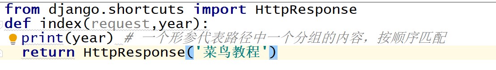
Named groups in regular expression paths
Syntax:
(?P<组名>正则表达式)
Named groups pass parameters by keyword, independent of positional order.
In views, in addition to request, the number of other parameters must match the number of groups in urls, and the parameter names in views must correspond to the group names in urls.
urls.py
path('admin/', admin.site.urls),
re_path("^index/(?P[0-9]{4})/(?P[0-9]{2})/$", views.index),
]
views.py
def index(request, year, month):
print(year,month) # A formal parameter represents the content of a group in the path, matched by keyword.
return HttpResponse('Rookie Tutorial')
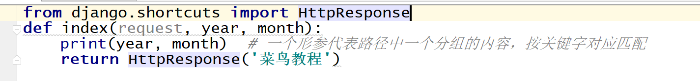
Named groups in regular expression paths
Route distribution (include)
There Is A Problem: In a Django project, multiple app directories sharing one urls can easily cause confusion, and later maintenance is inconvenient.
Conquer: Use route distribution (include) so that each app directory has its own urls independently.
Steps:
- 1. Create a urls.py file in each app directory.
- 2. In the urls file under the project name directory, uniformly distribute paths to each app directory.
Example
from django.urls import path,include # Import include from django.urls
urlpatterns = [
path('admin/', admin.site.urls),
path("app01/", include("app01.urls")),
path("app02/", include("app02.urls")),
]

In each app directory, write your own urls.py file for path routing.
app01 directory:
from django.urls import path,re_path
from app01 import views # 从自己的 app 目录引入 views
urlpatterns = [
re_path(r'^login/(?P<m>[0-9]{2})/$', views.index, ),
]
app02 directory:
from django.urls import path,re_path
from app02 import views # 从自己的 app 目录引入views
urlpatterns = [
re_path("^xxx/(?P[0-9]{4})/$", views.xxx),
]
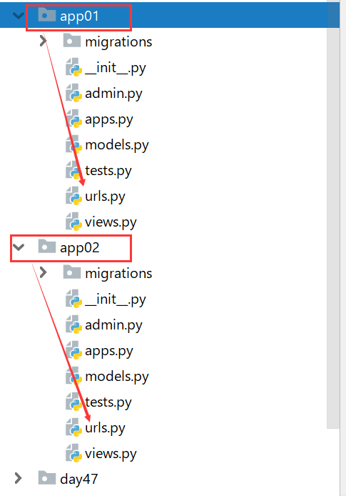
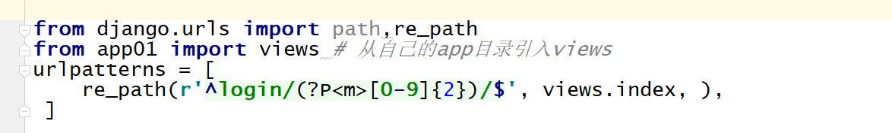
Write the respective view functions in the views.py file under each app directory.
Reverse Resolution
As features increase, when the URLs in the routing layer change, you need to modify the corresponding URLs in the view layer and template layer, which is very troublesome and inconvenient to maintain.
At this time, we can use reverse resolution. When the URL in the routing layer changes, the changed URL can be dynamically reverse-resolved in the view layer and template layer, avoiding the need for modification.
Reverse resolution is generally used in hyperlinks in templates and redirects in views.
Normal Path
In urls.py, give an alias to the route,name="route alias"。
path("login1/", views.login, name="login")
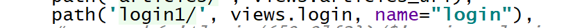
In views.py, import reverse from django.urls and usereverse("route alias")Reverse resolution:
return redirect(reverse("login"))
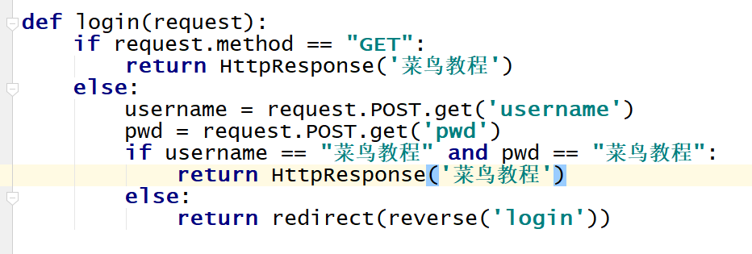
In the HTML files under templates, use{% url "route alias" %}Reverse resolution.
<form action="{% url 'login' %}" method="post">

Regular expression path (unnamed groups)
In urls.py, give an alias to the route,name="route alias"。
re_path(r"^login/([0-9]{2})/$", views.login, name="login")
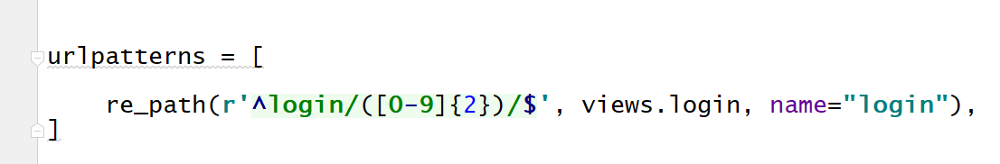
In views.py, import reverse from django.urls and usereverse("route alias", args=(parameters matching the regex,))Reverse resolution.
return redirect(reverse("login",args=(10,)))

In the HTML files under templates, use{% url "route alias" parameters matching the regex %}Reverse resolution.
<form action="{% url 'login' 10 %}" method="post">
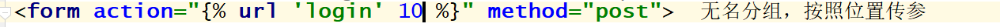
Regular expression path (named groups)
In urls.py, give an alias to the route,name="route alias"。
re_path(r"^login/(?P<year>[0-9]{4})/$", views.login, name="login")
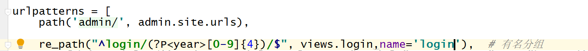
In views.py, import reverse from django.urls and usereverse("route alias", kwargs={"group name": parameters matching the regex})Reverse resolution.
return redirect(reverse("login",kwargs={"year":3333}))

In the HTML files under templates, use{% url "route alias" group name=parameters matching the regex %}Reverse resolution.
<form action="{% url 'login' year=3333 %}" method="post">
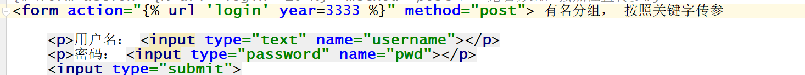
namespace
A namespace (English: Namespace) represents the visible scope of an identifier.
An identifier can be defined in multiple namespaces, and its meanings in different namespaces are unrelated to each other.
Any identifier can be defined in a new namespace, and they will not conflict with any duplicate identifiers because duplicate definitions are in other namespaces.
Existing problems:The route alias name has no scope. When Django resolves the URL in reverse, it searches sequentially across the entire project, and returns immediately when it finds the first URL specified by the route alias name. When the same route alias name is defined in urls under different app directories, it may cause reverse resolution errors.
Solution:Use namespaces.
Normal Path
Define the namespace (inside include is a tuple) with the following format:include(("app名称：urls"，"app名称"))
Example:
path("app01/", include(("app01.urls","app01")))
path("app02/", include(("app02.urls","app02")))
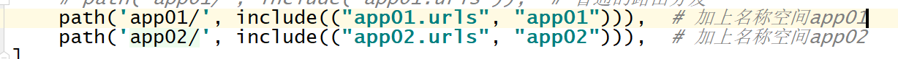
In app01/urls.py, define the same route alias.
path("login/", views.login, name="login")
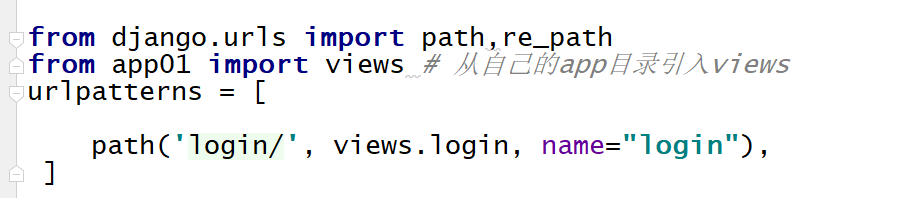
Use the namespace in views.py; the syntax format is as follows:
reverse("app名称：路由别名")
Example:
return redirect(reverse("app01:login")

Use the namespace in the HTML files under templates; the syntax format is as follows:
{% url "app名称：路由别名" %}Example:
<form action="{% url 'app01:login' %}" method="post">
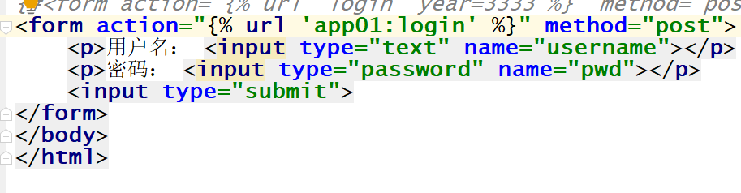
other extensions